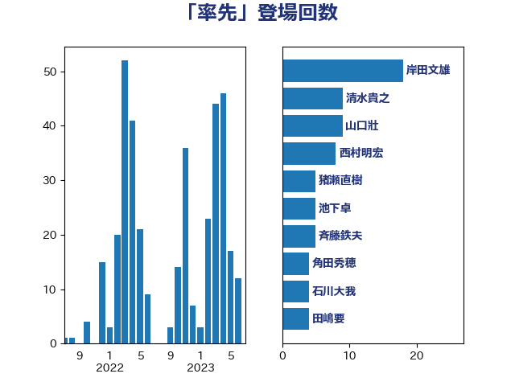

単語「率先」

| 岸田文雄 | 自由民主党 | 18 回 |
| 清水貴之 | 日本維新の会 | 9 回 |
| 山口壯 | 自由民主党 | 9 回 |
| 西村明宏 | 自由民主党 | 8 回 |
| 猪瀬直樹 | 日本維新の会 | 5 回 |
| 池下卓 | 日本維新の会 | 5 回 |
| 斉藤鉄夫 | 公明党 | 5 回 |
| 角田秀穂 | 公明党 | 4 回 |
| 石川大我 | 立憲民主党 | 4 回 |
| 田嶋要 | 立憲民主党 | 4 回 |
| 梅村聡 | 日本維新の会 | 4 回 |
| 平将明 | 自由民主党 | 4 回 |
| 山際大志郎 | 自由民主党 | 4 回 |
| 小川淳也 | 立憲民主党 | 4 回 |
| 北神圭朗 | 無所属 | 4 回 |
| 中川康洋 | 公明党 | 4 回 |
| 中島克仁 | 立憲民主党 | 4 回 |
| 高良鉄美 | 無所属 | 3 回 |
| 馬場雄基 | 立憲民主党 | 3 回 |
| 馬場伸幸 | 日本維新の会 | 3 回 |
| 阿部司 | 日本維新の会 | 3 回 |
| 鈴木義弘 | 国民民主党 | 3 回 |
| 野田国義 | 立憲民主党 | 3 回 |
| 近藤昭一 | 立憲民主党 | 3 回 |
| 萩生田光一 | 自由民主党 | 3 回 |
| 荒井優 | 立憲民主党 | 3 回 |
| 空本誠喜 | 日本維新の会 | 3 回 |
| 田畑裕明 | 自由民主党 | 3 回 |
| 田中健 | 国民民主党 | 3 回 |
| 林芳正 | 自由民主党 | 3 回 |
| 早稲田ゆき | 立憲民主党 | 3 回 |
| 天畠大輔 | れいわ新選組 | 3 回 |
| 国光あやの | 自由民主党 | 3 回 |
| 高木かおり | 日本維新の会 | 2 回 |
| 須藤元気 | 無所属 | 2 回 |
| 音喜多駿 | 日本維新の会 | 2 回 |
| 鈴木英敬 | 自由民主党 | 2 回 |
| 鈴木俊一 | 自由民主党 | 2 回 |
| 金子恭之 | 自由民主党 | 2 回 |
| 西岡秀子 | 国民民主党 | 2 回 |
| 葉梨康弘 | 自由民主党 | 2 回 |
| 落合貴之 | 立憲民主党 | 2 回 |
| 米山隆一 | 立憲民主党 | 2 回 |
| 浜口誠 | 国民民主党 | 2 回 |
| 津島淳 | 自由民主党 | 2 回 |
| 池畑浩太朗 | 日本維新の会 | 2 回 |
| 水岡俊一 | 立憲民主党 | 2 回 |
| 森本真治 | 立憲民主党 | 2 回 |
| 東徹 | 日本維新の会 | 2 回 |
| 山田太郎 | 自由民主党 | 2 回 |
| 小野泰輔 | 日本維新の会 | 2 回 |
| 小林鷹之 | 自由民主党 | 2 回 |
| 小宮山泰子 | 立憲民主党 | 2 回 |
| 宮本徹 | 日本共産党 | 2 回 |
| 室井邦彦 | 日本維新の会 | 2 回 |
| 塩川鉄也 | 日本共産党 | 2 回 |
| 塩崎彰久 | 自由民主党 | 2 回 |
| 堀場幸子 | 日本維新の会 | 2 回 |
| 城内実 | 自由民主党 | 2 回 |
| 古賀之士 | 立憲民主党 | 2 回 |
| 古川禎久 | 自由民主党 | 2 回 |
| 加藤勝信 | 自由民主党 | 2 回 |
| 住吉寛紀 | 日本維新の会 | 2 回 |
| おおつき紅葉 | 立憲民主党 | 2 回 |
| 齋藤健 | 自由民主党 | 1 回 |
| 鰐淵洋子 | 公明党 | 1 回 |
| 高木真理 | 立憲民主党 | 1 回 |
| 馬場成志 | 自由民主党 | 1 回 |
| 青山大人 | 立憲民主党 | 1 回 |
| 長妻昭 | 立憲民主党 | 1 回 |
| 鈴木敦 | 国民民主党 | 1 回 |
| 鈴木宗男 | 日本維新の会 | 1 回 |
| 金子道仁 | 日本維新の会 | 1 回 |
| 野村哲郎 | 自由民主党 | 1 回 |
| 道下大樹 | 立憲民主党 | 1 回 |
| 辻元清美 | 立憲民主党 | 1 回 |
| 足立康史 | 日本維新の会 | 1 回 |
| 赤池誠章 | 自由民主党 | 1 回 |
| 赤嶺政賢 | 日本共産党 | 1 回 |
| 西村智奈美 | 立憲民主党 | 1 回 |
| 西村康稔 | 自由民主党 | 1 回 |
| 芳賀道也 | 国民民主党 | 1 回 |
| 舩後靖彦 | れいわ新選組 | 1 回 |
| 舟山康江 | 国民民主党 | 1 回 |
| 緑川貴士 | 立憲民主党 | 1 回 |
| 紙智子 | 日本共産党 | 1 回 |
| 簗和生 | 自由民主党 | 1 回 |
| 篠原孝 | 立憲民主党 | 1 回 |
| 竹詰仁 | 国民民主党 | 1 回 |
| 福田昭夫 | 立憲民主党 | 1 回 |
| 福島伸享 | 無所属 | 1 回 |
| 福山哲郎 | 立憲民主党 | 1 回 |
| 神津たけし | 立憲民主党 | 1 回 |
| 石橋林太郎 | 自由民主党 | 1 回 |
| 石川博崇 | 公明党 | 1 回 |
| 石井章 | 日本維新の会 | 1 回 |
| 矢倉克夫 | 公明党 | 1 回 |
| 湯原俊二 | 立憲民主党 | 1 回 |
| 渡辺博道 | 自由民主党 | 1 回 |
| 浦野靖人 | 日本維新の会 | 1 回 |
| 浅田均 | 日本維新の会 | 1 回 |
| 河西宏一 | 公明党 | 1 回 |
| 沢田良 | 日本維新の会 | 1 回 |
| 永岡桂子 | 自由民主党 | 1 回 |
| 櫻井周 | 立憲民主党 | 1 回 |
| 櫛渕万里 | れいわ新選組 | 1 回 |
| 梅谷守 | 立憲民主党 | 1 回 |
| 柳本顕 | 自由民主党 | 1 回 |
| 柳ヶ瀬裕文 | 日本維新の会 | 1 回 |
| 柚木道義 | 立憲民主党 | 1 回 |
| 杉本和巳 | 日本維新の会 | 1 回 |
| 杉尾秀哉 | 立憲民主党 | 1 回 |
| 木村英子 | れいわ新選組 | 1 回 |
| 新垣邦男 | 立憲民主党 | 1 回 |
| 後藤茂之 | 自由民主党 | 1 回 |
| 平沼正二郎 | 自由民主党 | 1 回 |
| 川崎ひでと | 自由民主党 | 1 回 |
| 岸真紀子 | 立憲民主党 | 1 回 |
| 岡本あき子 | 立憲民主党 | 1 回 |
| 山本剛正 | 日本維新の会 | 1 回 |
| 小沼巧 | 立憲民主党 | 1 回 |
| 小沢雅仁 | 立憲民主党 | 1 回 |
| 小倉將信 | 自由民主党 | 1 回 |
| 宮路拓馬 | 自由民主党 | 1 回 |
| 宮崎勝 | 公明党 | 1 回 |
| 守島正 | 日本維新の会 | 1 回 |
| 奥野総一郎 | 立憲民主党 | 1 回 |
| 奥下剛光 | 日本維新の会 | 1 回 |
| 太栄志 | 立憲民主党 | 1 回 |
| 大島九州男 | れいわ新選組 | 1 回 |
| 塩田博昭 | 公明党 | 1 回 |
| 塩村あやか | 立憲民主党 | 1 回 |
| 堤かなめ | 立憲民主党 | 1 回 |
| 堀井巌 | 自由民主党 | 1 回 |
| 坂本祐之輔 | 立憲民主党 | 1 回 |
| 国定勇人 | 自由民主党 | 1 回 |
| 嘉田由紀子 | 無所属 | 1 回 |
| 和田義明 | 自由民主党 | 1 回 |
| 吉田とも代 | 日本維新の会 | 1 回 |
| 吉川赳 | 無所属 | 1 回 |
| 古賀千景 | 立憲民主党 | 1 回 |
| 務台俊介 | 自由民主党 | 1 回 |
| 加田裕之 | 自由民主党 | 1 回 |
| 前原誠司 | 国民民主党 | 1 回 |
| 保岡宏武 | 自由民主党 | 1 回 |
| 伊藤岳 | 日本共産党 | 1 回 |
| 伊波洋一 | 無所属 | 1 回 |
| 今枝宗一郎 | 自由民主党 | 1 回 |
| 中谷一馬 | 立憲民主党 | 1 回 |
| 中曽根康隆 | 自由民主党 | 1 回 |
| 中川郁子 | 自由民主党 | 1 回 |
| 下野六太 | 公明党 | 1 回 |
| 上田清司 | 国民民主党 | 1 回 |
| 上川陽子 | 自由民主党 | 1 回 |
| 三上えり | 立憲民主党 | 1 回 |
| ながえ孝子 | 無所属 | 1 回 |
| こやり隆史 | 自由民主党 | 1 回 |